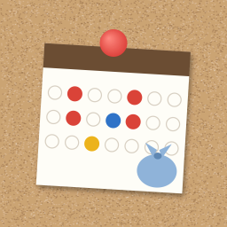

次はいつか分かるごみの日
きょう出しそびれたら、次は何日後。休み明けの最初の日も分かる。
お住まいの地域のごみカレンダーのとおりに、種類ごとの出す日（毎週・第◯◯曜・隔週・毎月◯日）を入れておくアプリです。
- 出しそびれたら次は何日後。きょう・あしたのごみと、きょう出しそびれたら次の回収まで何日あくかを出します（14日以上あくときは赤）
- 休みと振り替え。年末年始・お盆などの休みを期間で入れると、その間の回収を外し、休み明けの最初の日を見せます。振り替えの日も足せます
- 決まりはいくつでも。「第2・第4 水曜」は、その月の2回目と4回目の水曜日として数えます。草木のごみなど、回収のある月も選べます
- 知らせ。種類ごとに、前の晩か当日の朝を、好きな時刻で知らせます（この iPhone の中だけで鳴らします）
- 月のカレンダーで、どの日に何のごみかを色の丸で見られます
- 登録・課金はありません。決まりはこの端末の中だけに保存します。画面のいちばん下に小さな広告が出ます